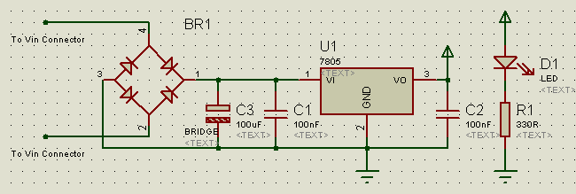

The Power Supply Circuit
The power supply cicuit of the mega8 board is pretty simple and not optimized for efficiency or anything like that. It uses a simple 7805 voltage regulator and just 3 caps and a rectifier. A "power on" LED has also been added:
